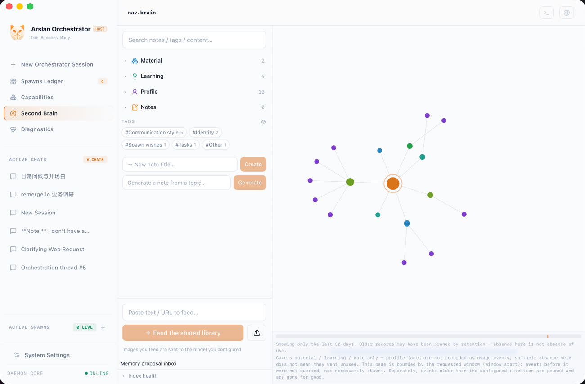
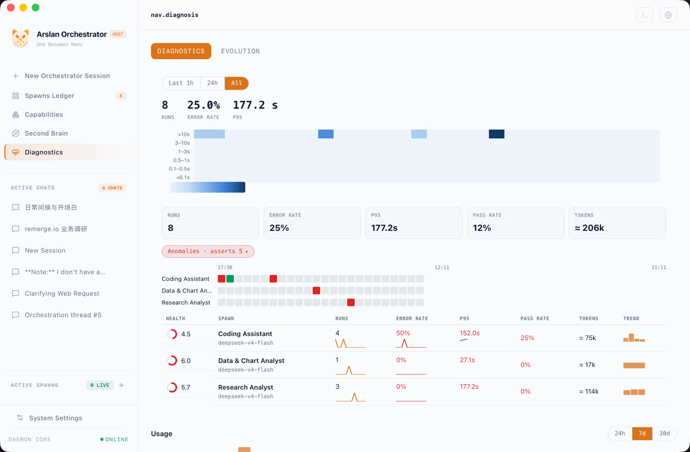
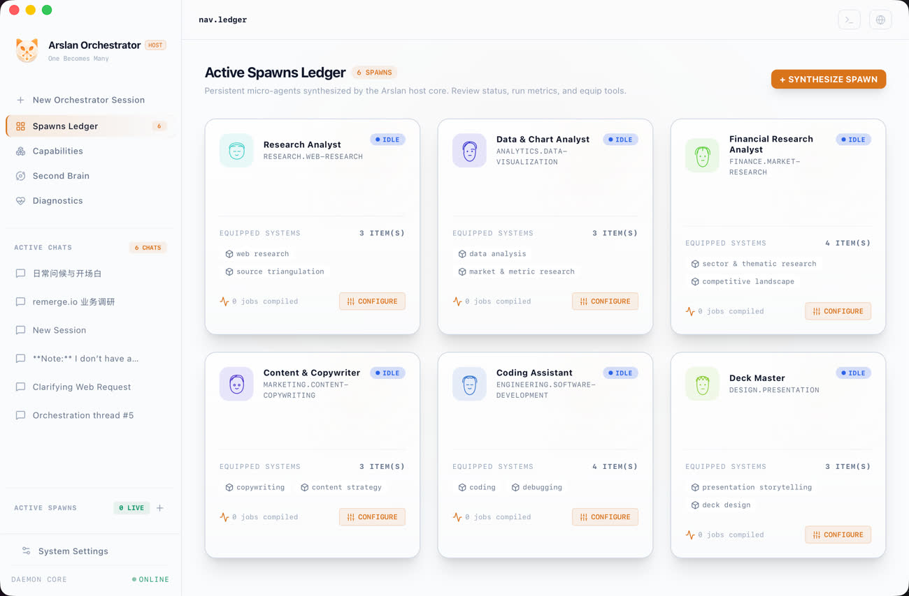
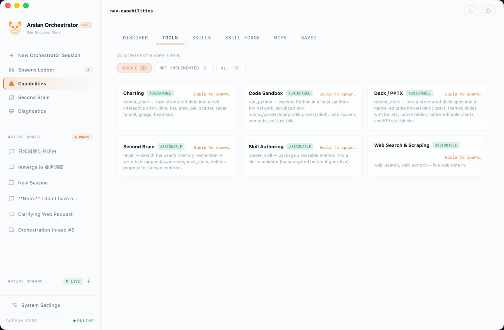
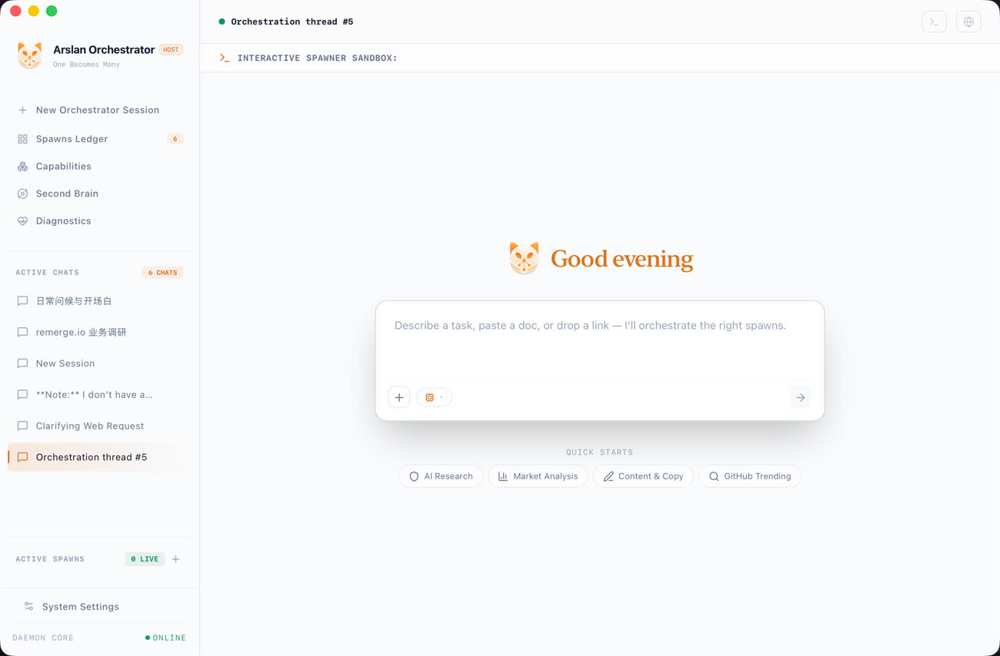

Arslan is a local-first personal AI orchestrator. You talk to
one host agent; it routes work to persona spawns you raised yourself. Their prompts improve on
their own — but every change passes a held-out exam, and nothing ships until you press
Promote.
macOS 11+ · Apple Silicon · signed & notarized · Apache-2.0 · pre-v1 · open source


A machine, not a chat box
Not another wrapper.
A chat box talks about the work. Arslan dispatches it — and if it can do
the job itself, it does; routing is not the default. Everything runs and logs on your machine,
in one thread you can read end to end.
doer-first routing · every dispatch lands in the ledger
How it works
One host. As many spawns as you raise.
Spawns are drafted from a persona seed library, named by you, kept on
your Spawns Ledger. Each one equips only what you grant it — and nothing more:
🔧 tools⚙ SKILL.md packs◎ MCP servers
Self-evolution, with an exam
Prompts improve on their own. Changes pass an exam first.
Your spawns get better at their jobs —
without ever changing behind your back. A rewrite only replaces the incumbent prompt if it wins
where it counts:
0%WIN RATE REQUIRED
0+HELD-OUT TASKS, MINIMUM
blindJUDGED, POSITIONS SWAPPED
No dimension may score worse than the incumbent.
A candidate cannot win by getting longer.
The holdout is enforced in code, not by convention.
Real and synthetic win-rates are never merged into one number.
Fail → discarded, you never see it. Pass → a readable diff, in your inbox.
Promoted. Until you press it, nothing ships. That is the whole point.
The promise guard
Caught in the act, by design.
Turn this repo into a launch deck.
“I have handed that to Deck Master — generating now, one moment.”
0 DISPATCHES
If you have used an agent, you have been lied to exactly like this. Arslan intercepts it with a deterministic check — not another model call.
One rewrite allowed; if it promises again, an honest template goes out instead.
Arslan cannot tell you it did something it did not do.
The second brain
Memory with a time axis.
What your spawns learn lands in a shared brain: [[wiki-link]] notes on a
live force-directed graph, retrieved by hybrid FTS5 + embedding search.
Every belief records when it took effect — and what superseded it.
Scrub the graph back to any past instant.
Ask it directly: “what did my second brain learn this week?”
The real client
And this is the real thing.
Everything above is brand animation. Everything below is a screenshot —
the shipped app, light theme, untouched.



real screenshots · ships with 6 languages · 6 theme palettes · light + dark
Safety is built in, not disclaimed
Everything that can spend or write is off by default.
From the shipped Settings page, verbatim: “They are all off by default and
none of them changes anything without you.”
Auto-evolution SPENDS API CREDITS
Background tidying WRITES TO MEMORY
Anything silent THERE ISN'T ONE
Generated code runs network-denied under the macOS kernel sandbox — and with no sandbox, it fails closed.
A local proxy injects git credentials; raw tokens never enter the sandbox.
Memory deletions go to an inbox — never applied silently.
Your machine · your keys · zero third-party servers in the middle.
Honest limitations
Pre-v1, and it says so.
macOS 11+ on Apple Silicon only, for now.
Bring your own model API key — Arslan runs against your account.
Auto-evolution has no spend cap yet; the product itself tells you to set a hard limit at your provider first.